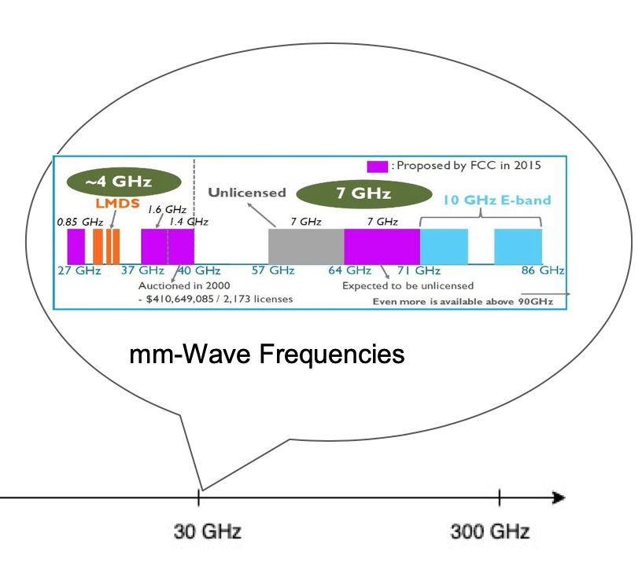

|
 |
|
|
| This project aims to devise next-generation wireless networks that achieve faster throughput and low latency. We both aim to study and re-design existing cellular infrastructure and develop new clean slate solutions. We developed solutions that learned critical problems in existing AT&T and Verizon wireless networks. We also developed a best paper award-winning solution to more effectively predict performance at cellphones purely from the cellular towers, without draining the phones' battery. We also explore new networking technologies for high-speed wireless beyond 5-G: a robust and reliable mm-wave solution. |
- Platypus: Sub-mm Micro-Displacement Sensing with Passive Millimeter-wave Tags As Phase Carriers, Thomas Horton King, Jizheng He, Chun-Kai (Sean) Yao, Akarsh Prabhakara, Mohamad Alipour, Swarun Kumar, Anthony Rowe and Elahe Soltanaghai, IPSN 2023 [PAPER] [WEBSITE]
- High Resolution Point Clouds from mmWave Radar, Akarsh Prabhakara, Tao Jin, Arnav Das, Gantavya Bhatt, Lilly Kumari, Elahe Soltanaghai, Jeff Bilmes, Swarun Kumar and Anthony Rowe, ICRA 2023 [PAPER] [WEBSITE]
- The Interplay of Clustering and Evolution in the Emergence of Epidemics on Networks, Mansi Sood, Rashad Eletreby, Swarun Kumar, Chai Wah Wu, Osman Yagan, ICC 2023 [PAPER] [WEBSITE]
- MiLTOn: Sensing Product Integrity without Opening the Box using Non-Invasive Acoustic Vibrometry, Akshay Gadre, Deepak Vasisht, Nikunj Raghuvanshi, Bodhi Priyantha, Manikanta Kotaru, Swarun Kumar and Ranveer Chandra
, IPSN 2022 [PAPER] [WEBSITE]
- A Community-Driven Approach to Democratize Access to Satellite Ground Stations, Vaibhav Singh, Akarsh Prabhakara, Diana Zhang, Osman Yagan and Swarun Kumar, MobiCom 2021 [PAPER] [WEBSITE]
- Quick (and Dirty) Aggregate Queries on Low-Power WANs, Akshay Gadre, Fan Yi, Anthony Rowe, Bob Iannucci and Swarun Kumar, IPSN 2020 (Best Paper Award) [PAPER] [WEBSITE]
- Full Duplex Radios: Are we there yet?, Vaibhav Singh (Co-Primary), Akshay Gadre (Co-Primary) and Swarun Kumar, HotNets 2020 [PAPER] [WEBSITE]
- Osprey: A mmWave Approach to Tire Wear Sensing, Akarsh Prabhakara, Vaibhav Singh, Swarun Kumar and Anthony Rowe, MobiSys 2020 (Best Paper Honorable Mention) [PAPER] [SLIDES] [WEBSITE]
- Osprey Demo: A mmWave Approach to Tire Wear Sensing, Akarsh Prabhakara, Vaibhav Singh, Swarun Kumar and Anthony Rowe, MobiSys 2020 [PAPER] [WEBSITE]
- Quick (and Dirty) Aggregate Queries on Low-Power WANs, Akshay Gadre, Fan Yi, Anthony Rowe, Bob Iannucci and Swarun Kumar, IPSN 2020 (Best Paper Award) [PAPER] [WEBSITE]
- Millimeter-Wave Full Duplex Radios, Vaibhav Singh, Susnata Mondal, Akshay Gadre, Milind Srivastava, Jeyanandh Paramesh and Swarun Kumar, MobiCom 2020 [PAPER] [SLIDES] [WEBSITE]
- Perspective: eliminating channel feedback in next generation cellular networks , Deepak Vasisht, Swarun Kumar, Hariharan Rahul and Dina Katabi, ACM SIGCOMM CCR 2019 [PAPER]
- Eliminating Channel Feedback in Next-Generation Cellular Networks , Deepak Vasisht, Swarun Kumar, Hariharan Rahul and Dina Katabi, SIGCOMM 2016 (Best Paper Award, GetMobile Research Highlight) [PAPER]
- piStream: Physical Layer Informed Adaptive Video Streaming Over LTE, Xiufeng Xie, Xinyu Zhang, Swarun Kumar, and Li Erran Li, MobiCom 2015 (ACM GetMobile Research Hightlight) [PAPER]
- LTE Radio Analytics Made Easy and Accessible, Ezzeldin Hamed, Dina Katabi, and Li Erran Li, ACM SIGCOMM 2014 [PAPER] [WEBSITE]
- PI: Swarun Kumar
- Students: Vaibhav Singh, Akshay Gadre and Akarsh Prabhakara
- Collaborators: Prof. Rick Carley, Prof. Anthong Rowe and Prof. Jeyanandh Paramesh